2009年5月 の記事
-
CDG→TPE
パリの一週間も終わり。 CDG空港に戻ってまいりました。免税店を覗きたいとこでもあるけどユーロが強くてなんもかんも高いから早々にラウンジに。 素っ気ない倉庫の入り口みたいなトコにあって、ベルを慣らさな…
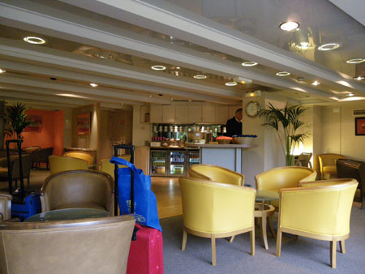
-
その他街あるき
なんだかんだで1週間いたので、目的もなく町歩きできたのが良かったな。 アレしなきゃコレしなきゃ、ドコ行かなきゃ、ソコ行かなきゃってばかりの旅はやっぱし疲れる。 一日ぐらい「なんにも予定のない日」ってゆ…
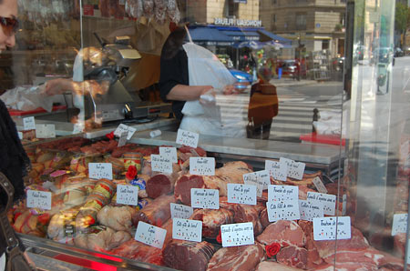
-
バスティーユ骨董市
今回の旅行でたのしみにしたのが骨董市 まずはモントレイユの市 って！骨董なのかーこれはー とゆーよーなガラクタが多いー。わけのわからないケーブルとかパイプとかネジとか。 モントレイユの市は生活密着系…
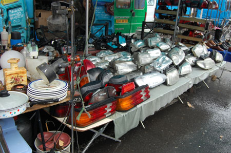
-
オペラ座とか
オペラガルニエ。 通称日本人通りの先にあるので、○○観光とか○○ツアーとかのワッペンを付けた方々が多く見られますル。 でも、ホントにヴィトンの紙袋をぶら下げている日本女子がいるのには驚いた。 たぶん台…
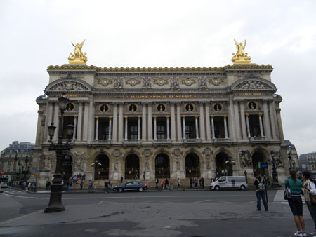
-
シテ島とかポンピドゥーとか
シテ島に。 前回シテにはどーゆーわけかコンシェルジェリーとゆー監獄メインで行ってしまったので サントシャペルをみてなかったのでした。 ガイドブックとかにもコンシェルジェリーより、星が多いんだけどなー …
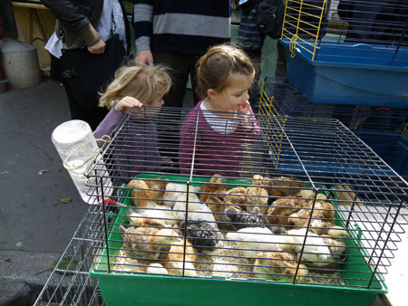
-
ベルサイユとかオルセーとか
ベルサイユです。 ちいさいときに、アニメ「ベルサイユのバラ」を見て 「これはエッチなやつだ！」「わるいオトナのやつだ！」と思いながら見ていたワタシ。 あの、裸＆薔薇が絡まるオープニングはあまりにも衝撃…
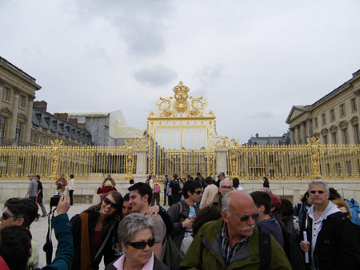
-
ステュディオ
2日目から部屋を移動。 天窓のあるステュディオ。バトミントンができるぐらい広くて天井が高い。 80%ぐらいIKEA商品で構成されてます（ワタクシ調べ） ミロの絵画っぽい部屋。 暖房×3、キッチン、冷…
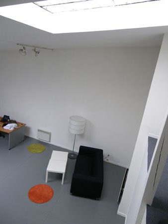
-
ルーブル
ルーブルです。 美術館といえばルーブル。 あれこれ美術の教科書にのっている作品があるルーブル。 とにかく広いとしか言いようがないよー！ ああ…時差ぼけ。 仲良し親子のコンポジション。 ガラ…
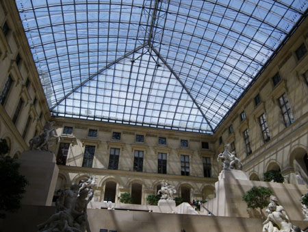
-
オランジュリー
いきなり初日からオランジュリーに。 行くつもりなかったけど、ミュージアムパスを買うついでに入っちゃった。 パリに行きたかった理由の一つがこのオランジュリーだったのだけどさて。 地中美術…
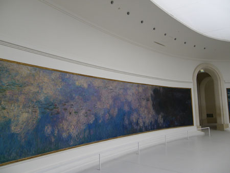
-
TPE→CDG
朝はウーロンティー フルーツとかサラダとか出て。 やっぱりお粥だー！おいしい！ このオボロみたいなのってなんだー。けっきょくちょこっとしか食べなかった。 CDG空港2タミ？ 味のある空港。…
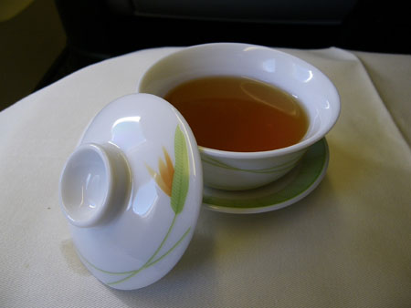
-
台北行き
ひさしぶりの旅行です。 トーキョーのお仕事中、「あーどっか行きたいどっか行きたい」と念仏唱え、よーやく這々の体で片付け倒して、よーやく。 と、思ったら、新型インフル騒動。 行けるか？行けるのか？行って…
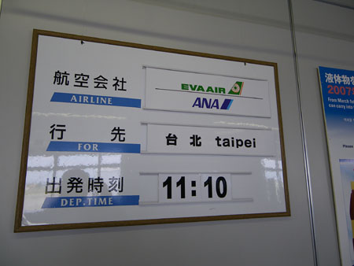
-
到着してます
なんだかんだで、到着してます。パリ。 過去２回フランスには来ているものの、ルーブルも、ベルサイユも行ったことが無かったので、とりあえずフツーの観光してます。 でも、滞在1週間の予定なので、ホテルでは…
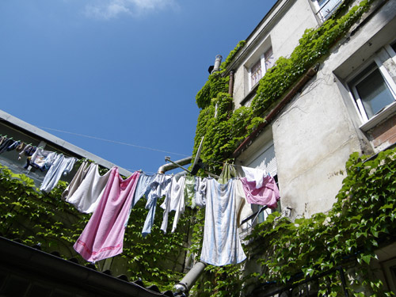
-
たびってます
間があいちゃいましたー。 仕事に燃え尽き炭となって、よーやく動けるよーになったかなーとゆーわけで、旅に出ております。 今は、トランジットで台北桃園空港でチャーハン食べたり、ビール飲んだり。 このあと…